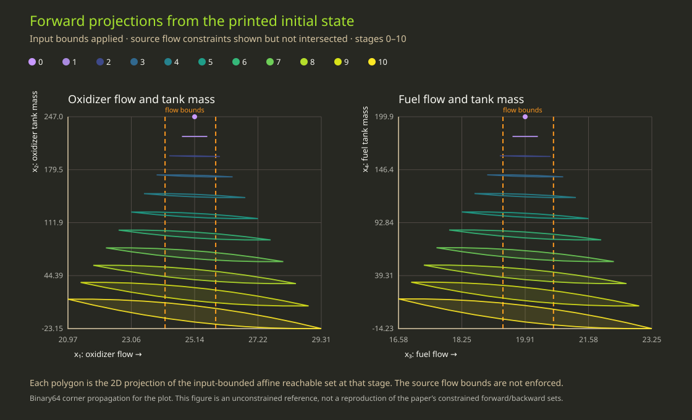
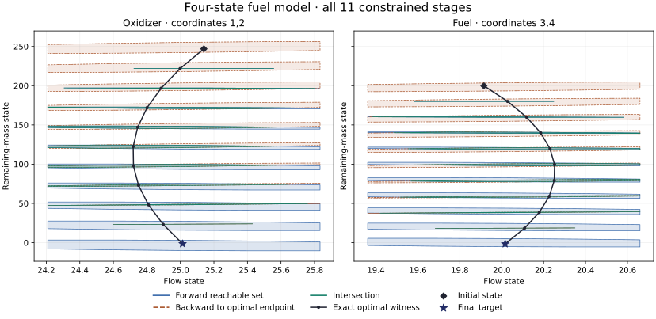

Model candidate · four states · one scalar input · ten transitions
A four-state fuel-control model from a 2017 paper
This lesson transcribes the final numerical example in Bulaev, Goranov, and Kalev’s paper on open-loop control of a launch vehicle’s third stage. The paper supplies a discrete affine model, flow bounds, and a convex terminal objective. The repository has not yet implemented this model in its C++ catalogue.
How the four states interact
The scalar control changes both propellant flows. Each tank mass then decreases by its corresponding flow.
The printed discrete model
For ten control steps, the state obeys , where .
Initial state
Flow and control constraints
, , and . The paper does not state whether the flow bounds include both endpoint stages.
The state coordinates are oxidizer flow, oxidizer tank mass, fuel flow, and fuel tank mass. The source gives no physical units or sampling duration. It describes the displayed parameter values as scaled for presentation.
Forward geometry before state constraints
This figure propagates the printed initial point under the scalar input bound. Dashed lines mark the paper’s flow bounds, but the plot does not intersect the reachable sets with those bounds. It shows the input-bounded zonotope projections as a reference for a later constrained implementation.

The terminal objective and printed result
The paper reports a minimum value of 4.6608 at . The negative terminal tank masses follow from the printed solution. The example supplies no tank-mass constraints, so this result is a scaled mathematical example, not a physically admissible propellant plan.
Consistency check on the reported terminal state
The flow updates conserve 4x₁(t) + 5x₃(t) = 200.135 because 4(5/12) − 5(1/3) = 0. The tank mass updates therefore decrease 4x₂(t) + 5x₄(t) by 200.135 at every step, regardless of the control sequence.
At stage 10 the displayed initial point gives 4(247) + 5(199.92) − 10(200.135) = −13.7500. The reported terminal masses give −13.7666. The difference of 0.0166 exceeds the maximum of 0.00045 from rounding both terminal masses to four decimal places. Unreported precision in the initial data could account for the difference. Treat the printed terminal vector as a source reference. A reproduction that uses the displayed inputs exactly must satisfy the invariant above.
Constrained sets and an exact optimal trajectory
At each stage, all four coordinates are affine functions of cumulative control sk and its running sum wk. Their updates are sk+1 = sk + uk and wk+1 = wk + sk. Applying both displayed flow bounds at all eleven stages gives −2.235 ≤ sk ≤ 1.6632.
The two terminal invariants give an objective lower bound of 465138219/100040000 ≈ 4.649522381. A ten-control history attains the bound while satisfying the displayed interval and flow constraints. Its largest absolute control is about 0.340.

An independent lifted LP checked twelve directions at each stage for each set role. All 396 support comparisons agreed within 3.56 × 10−15 in the reduced coordinates. Download the exact vertices and witness or read the derivation and capture record.
What the paper computes
The authors describe forward reachable sets, minimization over the reachable terminal set, backward reachable sets, and intersections that define feasible trajectories. They then recover a set of optimal control sequences with a linear program. They use Chernikova’s method for vertex-to-facet and facet-to-vertex conversion.
Figure 1 shows two-dimensional projections of forward and backward sets and their intersections. Figure 2 shows optimal trajectories. See pages 24–25 in the publisher PDF. The paper does not provide machine-readable vertices, numerical control sequences, run time, or vertex counts. The constrained figure uses the disclosed endpoint convention and an independently derived optimal endpoint.
A direct quadratic-program solution could return an optimal witness. It would not reproduce the paper’s reachable-set geometry or its set of all optimal controls.
Source identity and limits
The source is V. V. Bulaev, A. Yu. Goranov, and V. I. Kalev, “The Optimal Open-Loop Control Construction of Complex Mechanical Plants Motion,” Bulletin of the South Ural State University. Ser. Computer Technologies, Automatic Control, Radio Electronics, 17(4), 20–28 (2017), DOI 10.14529/ctcr170403. The journal record links the publisher PDF.
The two supplied Word files with the name “Статья бугорка.doc” are different papers. The NPOA 2017 file matches this fuel-control article by title and abstract. The UralENIN 2017 file is a separate article on a modified recursive algebraic method for reachable sets. Text extraction did not expose embedded equations, so it cannot establish whether the two papers reuse any model equations. The files are private and are not copied into this repository.
- NPOA file SHA-256:
a8ed876c8a34d4eb798c031c6ede02a662e771b73cbead65cc42be8ff6132dc0. - UralENIN file SHA-256:
565ae84cf2c2661df47ce98a7a3d6c2ffa5cc9f220bf81a54f3b8a64c73a1c2a.
This is a source-qualified model candidate for the broader issue 1012 model catalogue. The native C++ example reaches the same optimum with a different feasible control sequence. It produces two constrained forward projections and CSV traces.